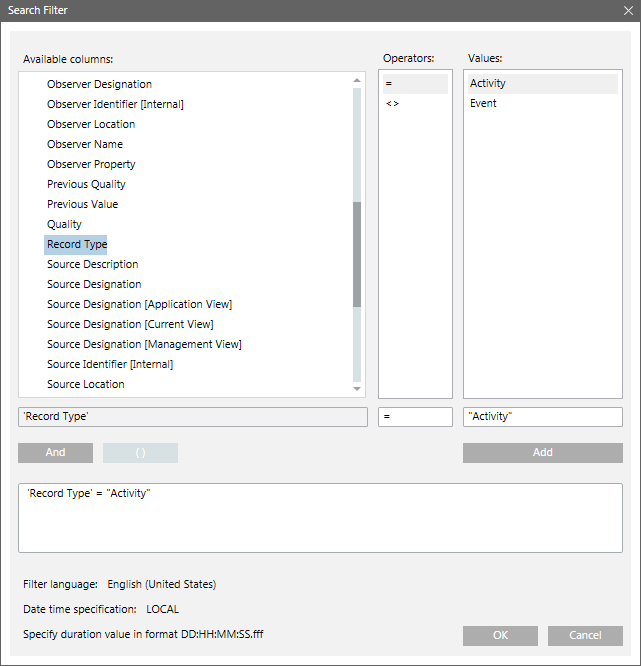

Search Filter Dialog Box
The Search Filter dialog box allows you to view a search filter condition and specify a filter condition on the columns that are not present in the log view.
It also allows you to view, modify, and delete a combined search filter expression. You can apply the search filter on all columns except columns of type date and time.

Search Filter Dialog Box Components | |
| Description |
Available Columns1 | Lists all the available columns from the Activities and Events Log. |
Operators1 | Lists all the operators associated with a specific column selected in Available Columns. |
Values1 | Lists all the values associated with a specific column selected in the Available Columns list. You can also select multiple values by pressing CTRL or SHIFT and selecting multiple values. |
Filter expression field | Displays the filter expression. You can edit a filter expression in this field. |
Add/Update | Allows you to add or update a filter expression. Update is enabled only when a valid filter expression is added or modified in the Filter expression field. |
And | This is a logical operator that allows you to combine filter expressions and create complex filters. This button is unavailable until a filter expression is added to the Filter expression field. |
"( ) " | Allows you to group filter conditions, which define the order of their evaluation. These brackets are unavailable until a filter expression is added to the Filter expression field. |